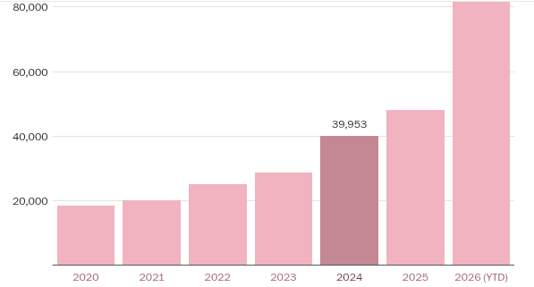

Recent breaches at major banks are likely to be the work of a 26-year-old amateur who got help from chatbots.

Statistics
Tens of thousands of South Koreans had their financial data exposed online in recent weeks after at least nine major banks there suffered cyberattacks that suggested a dark future for online security.
One man, a 26-year-old living in southern China, was allegedly behind the attacks, according to an investigation by cybersecurity company CrowdStrike. Traces left online and failure to secure his own systems allowed investigators to piece together the man’s name, age, location and what he allegedly did.
The clues revealed that the devastating assault on some of Asia’s most sophisticated financial institutions was the work of an amateur. The attacks were launched with help from a few artificial intelligence chatbots, CrowdStrike found, before asking one to help sell the stolen data online and draft a fake résumé touting cybersecurity skills.
What readers are saying?
Cruza
AI, solve cancer, bring down society. Odd tradeoff....
Cal35
I love it, actually, good news....let's call it 'the democratization of computer mayhem'---